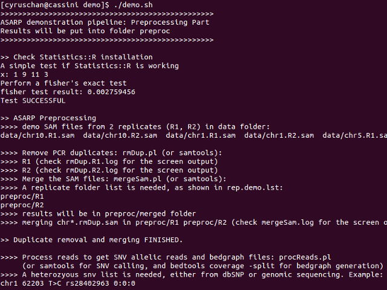
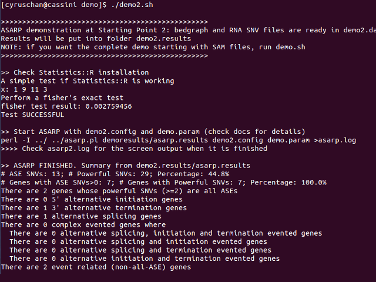

Demo
This page describes the two quick demonstrations (demo) for users to get started with the ASARP pipeline, one starting from SAM files and the other from bedgraph and RNA SNV files. Please check out Setup before running the demo. The demo scripts and data are bundled with the pipeline, available in the demo folder.
NOTE: the data provided are small subsets from large real data, serving for the demonstraton purpose only.
Requirement
Before running the demo scripts, make sure the gene annottion file is unzipped (see Setup) following the instructions below. For human data, we include the necessary data files such as the hg19 gene annotation. Because of the upload limit of GitHub, the example file needs to be unzipped.
cd demo chmod +x extract.hg19.sh ./extract.hg19.sh
Demo 1: Starting from SAM files with all preprocessing steps
This pipeline (demo.sh) demonstrates the scenario where there are two replicates (R1 and R2) for the SAM files, and a SNV list generated from genomic sequencing. All the pre-processing steps will be applied including duplicate removal, merging replicates, and processing bedgraphs and RNA SNVs, namely rmDup, mergeSam and procReads. The demonstration also prints informative messages to help users understand each step towards the ASARP predictions. All the preprocessing results will be output to folder preproc. demo.results will contain the final ASARP output.
Run the script:
cd demo chmod +x demo.sh ./demo.sh
Snapshot of running demo.sh:

Demo 2: Starting from bedgraph and RNA SNV files
This pipeline demonstrates the scenario where the bedgraph and RNA SNV files are ready, i.e. Start Point 3 in the flowchart in Overview. The bedgraph and RNA SNV files are included in the folder demo2data, and they are actually generated using the previous demo. demo2.results will contain the final ASARP output.
Snapshot of running demo2.sh:

P-value cutoffs with FDR control
While the modiBH (modified Benjamini Hochberg) FDR control method is used to adjust the ASE SNV p-value cutoff in ASARP because of its best overall simulated performance in ASE and ASARP, users can also visualize the other FDR control methods:
perl -I .. ../fdrASE.pl testFdrASE demo2.config demo.param
The output file testFdrASE.pdf displays the different p-value cutoffs.

For more details, see fdrASE. There are other analysis tools for the different SNV categories and SNV output can be chained as input for various kinds of analysis.
SEE ALSO
COPYRIGHT
This pipeline is free software; you can redistribute it and/or modify it given that the related works and authors are cited and acknowledged.
This program is distributed in the hope that it will be useful, but without any warranty; without even the implied warranty of merchantability or fitness for a particular purpose.
AUTHOR
Cyrus Tak-Ming CHAN
Xiao Lab, Department of Integrative Biology & Physiology, UCLA